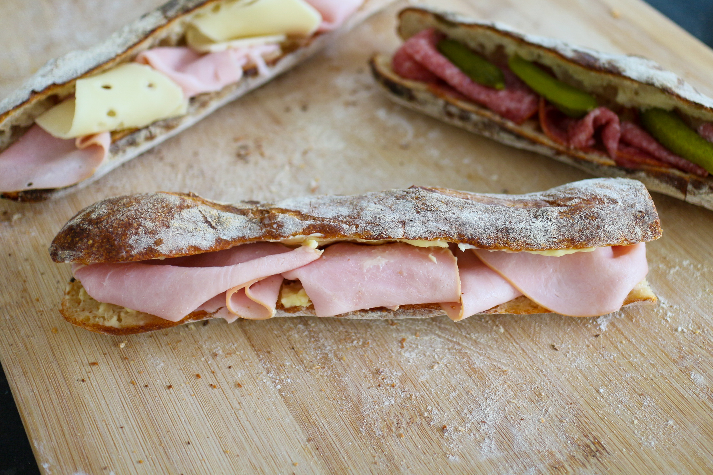

Le Jambon Beurre

Puisqu'a Paris on n'a pas vraiment de recette typique qui fait kiffer sa maman, le plat le plus emblématique c'est le jambon beurre !
Pas de quoi casser trois pattes a un canard. Sur le papier c'est ni plus ni moins qu'un bout de pain farci au beurre et au jambon blanc nitrité. Mais bon, faut bien avouer que ca déchire !
Ingrédients
- Une demie baguette
- Des tranches de jambon blanc
- Du beurre (sans déconner ?!)
Préparation
- Ouvrez soigneusement la baguette en deux a l'aide d'un couteau a pain
- Tartinez la dite baguette avec de beurre (et faites pas vos radins !)
- Garnir tout aussi généreusement de jambon blanc
- Reste plus qu'a refermer croquer et kiffer !